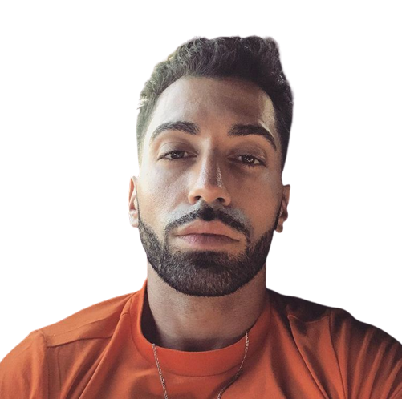

PNL (Peace N Lovés) est un groupe de rap français composé de Ademo et NOS, deux frères originaires de Corbeil-Essonnes dans le 91.
Le groupe sort un premier EP nommé Que la famille en 2015, qui sera certifié disque de platine en 2020, cinq ans après sa sortie.
Le 12 juin 2015 sortira Le monde ou rien, un morceau qui leur fera connaître le succès. Il comptabilise plus de 127 millions de vue en 2021.
Le premier album Le Monde Chico sort le 30 octobre 2015 et se classe première place des ventes sur iTunes dès la première semaine.
Il est aujourd'hui triple disques de platines.
C'est le 16 septembre 2016 que le groupe sort son second album intitulé Dans la légende, qui connaîtra un énorme succès. Il est aujourd'hui vendu à plus d'un million d'exemplaires.
Enfin, leur dernier album en date sort le 5 avril 2019, et s'intitule Deux Frères.
Son succès sera encore plus important que le précédent : plus de 74 000 ventes en trois jours et certifié disque d'or avant la fin de sa première semaine.
ademoArticle

ArticleAdemo
Ademo, de son vrai nom Tarik Andrieu est un rappeur du groupe de rap PNL.
Née le 26 décembre 1986, il grandit au quartier des Tarterêts à Corbeil-Essonnes.
En 1995 René Andrieu, le père des deux frères est arrêté pour détention de Canabis.
Suite à cela, ils déménageront en Corrèze où Tarik suivra un BEP électronique, ainsi que son baccalauréat.
C'est lors de son adolescence qu'il s'initiera au rap, commençant sa carrière lorsqu'il travaillait à la SNCF.
Il sera cependant incarcéré à la prison de Fleury-Mérogis, avant d'en sortir en 2008.
En 2020, il connaît une altércation musclée avec les forces de l'ordre, se concluant sur une condamnation à deux mois de prison ferme.
Tarik sort sa première mixtape Le Son des Halls Vol. 1 en 2008. Le deuxième volume sort en 2011.
nosArticle
ArticleNOS
NOS, de son vrai nom Nabil Andrieu est un rappeur du groupe de rap PNL.
Née le 25 avril 1989, il grandit comme son frère au quartier des Tarterêts à Corbeil-Essonnes.
Il déménagera avec son frère Tarik en Corrèze après l'arrestation de son père en 1995.
Après l'obtention d'un baccalauréat STG, il étudiera quatres années de commerce à l'IUT de Ville d'Avray qu'il arrêtera par manque de moyens financiers.
Nabil entame son projet 365 jours pour percer en novembre 2011, sous le pseudonyme Ladif.